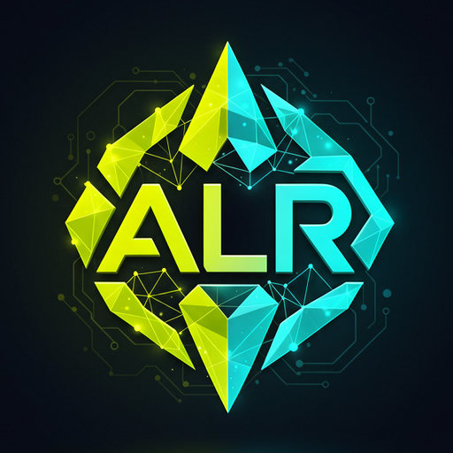

ALR Navegador por Voz
Ouvir
Clique em "Ouvir" e fale um comando (ex: "abre o YouTube", "pesquisa bolo de cenoura")...
Modelo
alr-systemone-native-v1
Última decisão
-
p50
-
Chamadas
0
0 canceladas por fala nova
Ações
0
Modo
100% Local (CPU)
Decisão do ALR
AGUARDANDO
Nenhuma fala analisada ainda.
Intenção
📋 Histórico de Ações
0
Limpar
Nenhuma ação realizada nesta sessão. Fale um comando para iniciar.
Configurações do ALR Voz
×
URL do Servidor ALR:
Endpoint do runtime em Rust na porta 3000.
Idioma de Reconhecimento:
Português (Brasil)
English (US)
Español
Limiar de Confiança Mínimo:
75%
Nome do Modelo no HUD: